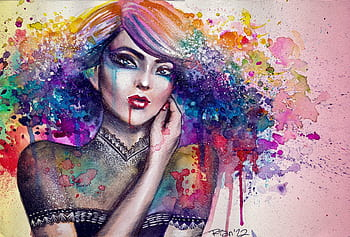
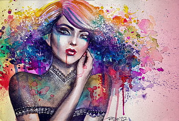

Echoes of Solitude
The title reflects the melancholic and contemplative mood of the figure with the guitar. The cool color palette of blues and greys enhances the sense of loneliness and introspection, suggesting that the music played by the figure is an expression of their inner emotions and solitude. The guitar, often associated with personal and emotional expression,creating an echo of their solitary state.
The Fishermen’s Resolve
This artwork captures the spirit of perseverance and teamwork. The fishermen, united in their effort to push the boat into the sea, symbolize human determination and resilience against the forces of nature. The warm glow of the early morning light adds a sense of hope and new beginnings, while the distant mountains and other boats suggest a thriving coastal community. This scene beautifully portrays the balance between human endeavor and the natural world.This artwork captures the spirit of perseverance and teamwork. The fishermen, united in their effort to push the boat into the sea, symbolize human determination and resilience against the forces of nature. The warm glow of the early morning light adds a sense of hope and new beginnings, while the distant mountains and other boats suggest a thriving coastal community. This scene beautifully portrays the balance between human endeavor and the natural world.

A Night in Red
This image portrays a stylized depiction of a comic book anti-hero. The character, dressed in a red and black costume with two swords strapped to the back, is reminiscent of Deadpool. The bold color scheme and dynamic portrayal capture the essence of Deadpool’s chaotic and irreverent nature, set against a menacing red background that fades into darkness.
Twilight Serenity Peak
This image captures a serene and majestic natural landscape at twilight. It features a tranquil river flowing through dense forests with autumn-colored foliage, set against a backdrop of towering snow-capped mountains. The warm golden glow of the setting sun and its reflection on the river’s surface create a peaceful and harmonious atmosphere.
.jpeg.jpg)
 

.jpeg.jpg)
.jpeg.jpg)
.jpeg.jpg)